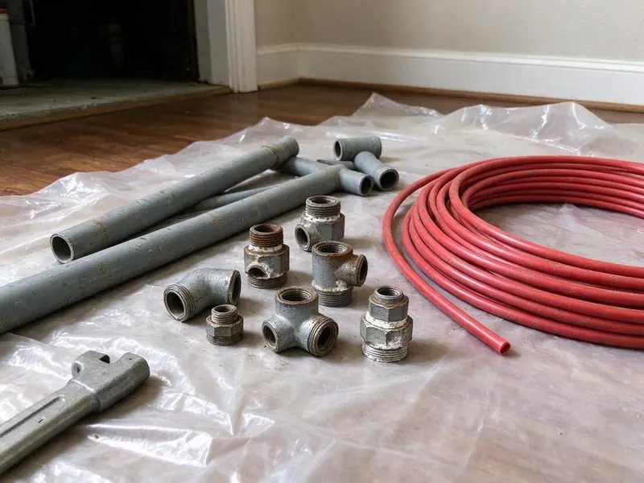

Water Heater Replacement in Janesville, WI
For dependable water heater replacement in Janesville, WI, trust HKV Plumbing. We deliver efficient installation and lasting hot water comfort for your family.
- Same-Day Replacement Available
- Old Tank Hauled Away
- Upfront Pricing
- Code Approved

Need a New Water Heater? We Are the Pros in Janesville, WI.
Get in touch today for a free estimate on your water heater replacement.
Your Trusted Source for Water Heater Replacement in Janesville, WI
When it is time for a new water heater, HKV Plumbing offers expert replacement for homes throughout Janesville, WI. Our certified plumbers make sure your new system is matched to your home's needs and installed to high standards, providing reliable hot water for years to come.
Our expertise includes:
- Compliance with all local plumbing and safety requirements.
- Thorough removal and disposal of old water heater units.
- Expert installation of all major water heater brands.

Additional Plumbing Replacement Services in Janesville, WI
When repairs are no longer enough, our replacement services in Janesville, WI deliver durable upgrades that restore full performance.


Customers
Why Choose HKV Plumbing for Water Heater Replacement in Janesville, WI?
When your water heater fails, you need hot water back fast and a replacement installed correctly. We stock popular sizes and handle the full job in one visit whenever possible.
- Accurate Sizing, We correctly size your new water heater to meet your family's hot water usage, preventing later shortages.
- Right Size, We size the heater to your household and recovery needs, not just the old tank's label.
- Local Expertise, We understand the particular challenges Wisconsin water quality and soil can pose to water heaters.
Citywide Coverage
No matter where you are located in Janesville, WI, HKV Plumbing is your trusted source for reliable water heater replacement. We offer fast response times across the entire metro area to get your hot water flowing again.
Experienced Team
The team understands the code differences between older and newer installations and plans upgrades to match. They explain each upgrade so you know exactly what you are paying for.
Safety-First Approach
Safety is the top priority in every water heater replacement project HKV Plumbing takes on. We carefully follow manufacturer guidelines and local Wisconsin plumbing codes, paying close attention to gas line connections, electrical wiring and pressure relief valve installation to prevent hazards.
Trusted Certified Janesville Plumbing Services Professionals
At HKV Plumbing, we take pride in providing certified plumbing services throughout Janesville, WI. Backed by recognized industry credentials, our experienced plumbers combine technical skill with genuine customer care. Whether it is repair, installation, or maintenance, we follow strict safety and quality standards to deliver long-lasting results you can trust.
Call Us Now PHCC Plumbing Contractor Recognition
PHCC Plumbing Contractor Recognition Better Business Bureau (BBB) Accreditation
Better Business Bureau (BBB) Accreditation Angi Certified Pro
Angi Certified Pro ISO 9001 Quality Management Certification
ISO 9001 Quality Management CertificationDependable Water Heater Replacement Services in Janesville, WI
Emergency Water Heater Replacement in Janesville, WI
A burst water heater or complete hot water failure can be an emergency for any Janesville, WI homeowner. HKV Plumbing provides emergency water heater replacement to quickly restore your hot water and prevent further damage. We are available to respond promptly, diagnose the issue and perform a fast, reliable replacement to get your life back to normal with little disruption.

Commercial Water Heater Replacement in Janesville
Businesses in Janesville have unique hot water needs that require robust commercial-grade water heaters. Whether it is for a restaurant, office or multi-family property, HKV Plumbing offers specialized commercial water heater replacement. We understand the need for minimal downtime and efficient, high-capacity systems. Our team can recommend and install units that meet your business's particular requirements and local commercial codes.
Rheem and AO Smith Water Heater Replacement in Janesville, WI
Rheem and AO Smith are leading brands in the water heater industry, offering a wide range of dependable models. HKV Plumbing provides professional replacement for Rheem and AO Smith water heaters in Janesville, WI. We can help you choose the right model, whether it is a standard tank, high-efficiency or tankless unit, and install it to manufacturer specifications for performance and warranty validity.
Electric Water Heater Replacement in Janesville
Many homes in Janesville rely on electric water heaters. When yours fails, it can be due to sediment buildup, a faulty heating element or an aging tank. HKV Plumbing provides expert electric water heater replacement, with proper electrical connections and efficient operation for consistent hot water. We handle all wiring and make sure your new unit is safely installed to code, restoring your home's comfort without delay.
Hybrid Water Heater Installation in Janesville, WI
Hybrid water heaters combine heat pump technology with traditional electric heating, offering real energy savings, especially when installed in a warm space like a garage. HKV Plumbing provides expert hybrid water heater installation in Janesville, WI, helping you reduce your energy use and utility bills. These units require specific electrical and venting considerations, which our experienced technicians are fully equipped to manage for reliable performance.
Tankless Water Heater Upgrades in Janesville
Considering an upgrade to a tankless water heater in Janesville? Tankless units offer endless hot water and energy savings. HKV Plumbing can assess your home's needs and replace your old tank-style unit with a high-efficiency tankless model. This often involves adjusting gas lines, water lines and venting, which our experts handle seamlessly. Enjoy the benefits of on-demand hot water with a professional tankless installation.
Gas Water Heater Replacement in Janesville, WI
Gas water heaters are common in many homes, offering powerful heating. Issues like burner problems, gas leaks or a corroded tank signal the need for replacement. HKV Plumbing specializes in gas water heater replacement in Janesville, WI, with precise gas line connections, proper venting and carbon monoxide safety. Our licensed plumbers follow strict safety protocols, installing your new gas unit for maximum efficiency and peace of mind.

Attic Water Heater Replacement in Janesville
Some older neighborhoods still have lead service lines, and many communities are working to remove them over time. Some homes, especially those built in certain eras, have water heaters in the attic. Replacing an attic unit requires careful lifting, a drain pan with a drain line and safe access for future service. We evaluate whether relocating the heater to the garage or an exterior closet makes sense to lower water damage risk. Our crews protect your ceilings and floors during removal and installation.
Nearby Water Heater Replacement in Janesville, WI
Our local presence means we are familiar with the plumbing challenges and codes in the Janesville area. This local expertise lets us provide tailored water heater replacement that is both effective and compliant, delivering long-lasting comfort for your home.
We take pride in being an accessible and reliable plumbing company for water heater replacement in and around Janesville. Our commitment to quick response times and quality workmanship means your hot water will be restored efficiently, with little disruption to your daily routine.
HKV Plumbing at a Glance
- Licensed and insured plumbers serving Janesville, WI
- Same-day appointments and 24/7 emergency response
- Upfront, flat-rate pricing before work begins
- 4.8-star rated by 448+ Wisconsin customers
Janesville Map
Janesville Information
- Population
- 66,102
- Area codes
- 608/920/815
- Service area
- Janesville and communities within 40 miles
- Nearby
- Madison, Waukesha, West Allis, Wauwatosa
A reliable water heater is essential for comfort year-round in Janesville, WI, and proper installation keeps it efficient through changing temperatures and water conditions.
Expert Services
Trust our professionals for reliable HKV Plumbing solutions in Janesville, WI.
Our Specialized Plumbing Services in Janesville, WI
At HKV Plumbing, we provide a complete range of plumbing services across Janesville, WI. From leak detection to full system installations, our team ensures fast, precise, and affordable service for both residential and commercial properties. Explore our core services below:


How Our Water Heater Replacement Process Works in Janesville, WI
Our water heater replacement process at HKV Plumbing is designed to be straightforward and stress-free for homeowners in Janesville, WI.
Request a Quote
Call (414) 432-4641 and tell us your current heater's size, fuel type and location. We give you a flat-rate quote and schedule installation, frequently the same day.
Remove and Install
We drain and remove the old heater, then install the new unit with fresh connections. Code upgrades like expansion tanks and drain pans are added as needed.
Test and Haul Away
We fill the tank, check for leaks and confirm proper venting and temperature. Then we haul away the old unit and review maintenance tips with you.
Frequently Asked Questions About Water Heater Replacement in Janesville
Most standard gas or electric tank replacements cost $1,400 to $3,000 including the heater, labor and typical code upgrades. Attic installs, larger tanks or relocations can raise the cost to $3,000 to $4,500.
HKV Plumbing installs and services all major brands, including Bradford White, Rheem, AO Smith, Rinnai, Navien and State Water Heaters. We can help you choose the best brand and model that suits your budget and hot water demands.
Leaks at the base, rusty water, rumbling noises, inconsistent hot water and an age over 10 years are common signs. A leaking tank should be replaced right away.
Choosing the right size depends on the number of people in your household, their hot water usage habits and peak demand times. Our technicians will calculate the appropriate GPM (gallons per minute) for tankless or gallon capacity for tank models so you never run out of hot water, especially in multi-bathroom Janesville homes.
Most replacements take two to four hours. Attic installs or relocations can take more time.
Most new water heaters come with a manufacturer's warranty ranging from 6 to 12 years on the tank and components, depending on the model and brand. HKV Plumbing also provides a labor warranty on our installation, so your investment is protected.
Flushing a traditional tank water heater once a year is recommended in most homes. Hard water is common across much of Wisconsin, especially where supply comes from groundwater moving through limestone and dolomite. This helps remove sediment buildup, which can reduce efficiency and shorten the lifespan of the unit. Regular flushing can also prevent scale from impacting heating elements.
Common signs include a lack of hot water, rust-colored water, a metallic taste in hot water, strange noises like rumbling or popping from the tank, visible leaks around the base of the unit or a water heater that is over 10 to 12 years old. If you notice any of these, it is time to call a licensed plumber.
What People Are Saying About Our Plumbing Experts?

Emily R.
I called HKV Plumbing for plumbing repair, and the technician was fast, polite, and thorough. They explained the problem clearly and fixed it the same day. I will definitely hire them again. Highly recommended!
Plumbing Repair · Waukesha, WI
Patricia H.
We had a slab leak that two other companies could not find. HKV Plumbing located it in under an hour, explained our options, and the price matched the quote to the dollar.
Slab Leak Repair · West Allis, WI
Daniel K.
A pipe burst at 11 pm and they actually answered. The plumber showed up within the hour, shut everything down, and had us back to normal the next morning. Could not ask for more.
Emergency Plumbing · Janesville, WI
Robert G.
The trenchless sewer replacement saved our front yard. They walked us through the camera inspection footage first so we knew exactly what we were paying for.
Sewer Line Replacement · Madison, WI
Sofia M.
Two new toilets installed in one visit, no mess left behind, and the tech even adjusted a faucet he noticed was dripping. Fair pricing and really friendly.
Toilet Installation · Milwaukee, WI
Mark T.
When our office needed drain cleaning, HKV Plumbing provided quick, reliable service. The plumber arrived on time and made sure every drain flowed perfectly before leaving. Very satisfied.
Drain Cleaning · Waukesha, WI